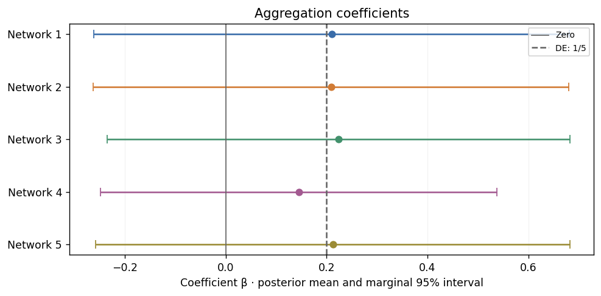
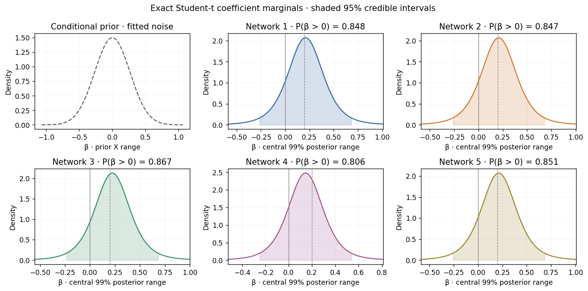
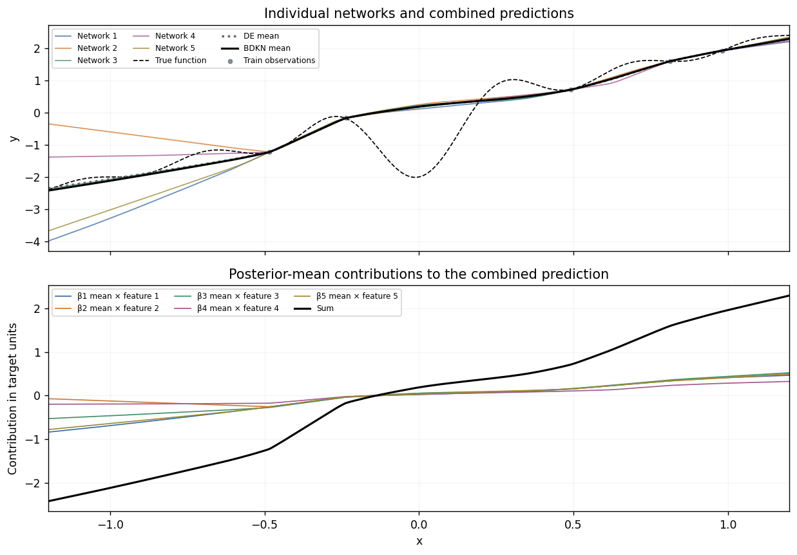
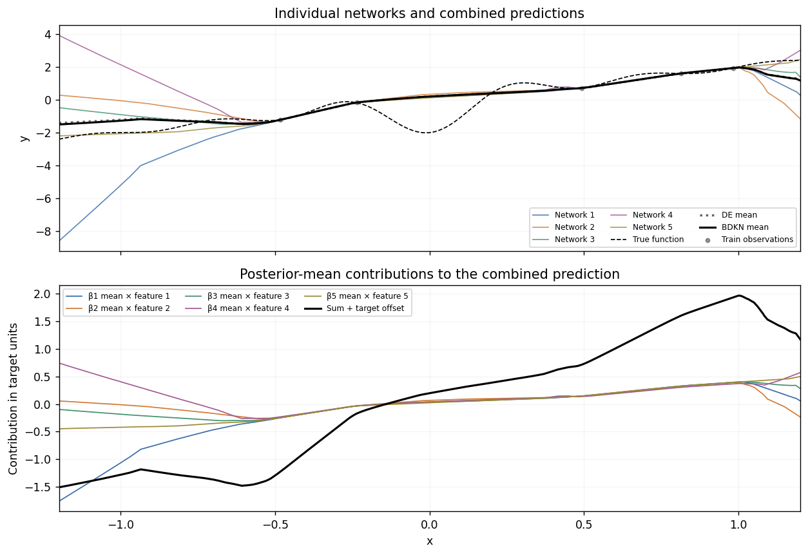
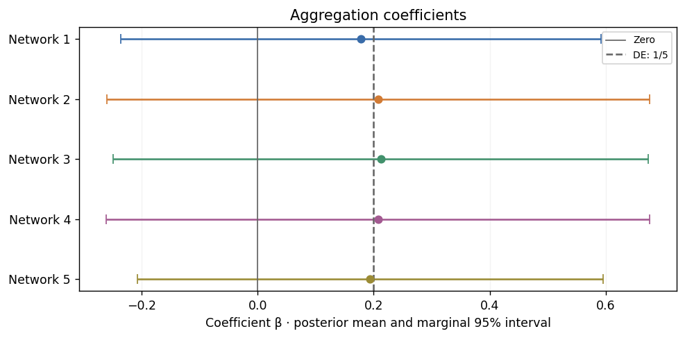
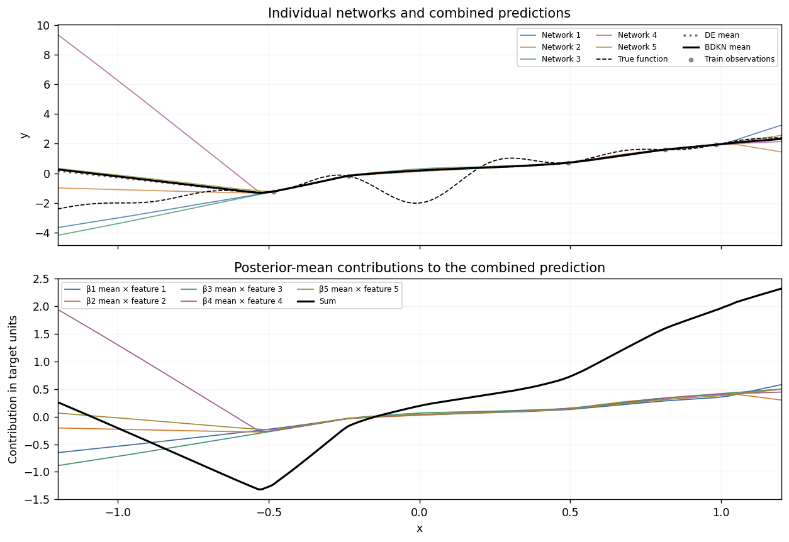

Regression comparison
Download resultsAggregation weights
Coefficients can be negative and need not sum to one. Intervals describe coefficient uncertainty; the dashed reference is DE’s fixed 1/H weight.
BDKN


Each density panel uses its own X range for readability; coefficient intervals above share a common axis. Prior reference conditions on fitted noise. Contribution shares use held-out inputs; test targets are used only for scoring.
| Network | β mean | 95% low | 95% high | P(β > 0) | Contribution share | Test RMSE | Test NLL |
|---|---|---|---|---|---|---|---|
| 1 | 0.18378 | -0.28768 | 0.65525 | 0.81884 | 0.18558 | 0.77438 | 14831.39553 |
| 2 | 0.21712 | -0.25401 | 0.68825 | 0.85530 | 0.21236 | 0.72161 | 5870.93193 |
| 3 | 0.18694 | -0.26881 | 0.64268 | 0.83002 | 0.18791 | 0.77327 | 3837.63935 |
| 4 | 0.21394 | -0.25925 | 0.68713 | 0.85120 | 0.21803 | 0.78641 | 25124.08623 |
| 5 | 0.19829 | -0.25603 | 0.65261 | 0.84357 | 0.19610 | 0.73920 | 2290.88784 |
Functional repulsion · BDKN



Each density panel uses its own X range for readability; coefficient intervals above share a common axis. Prior reference conditions on fitted noise. Contribution shares use held-out inputs; test targets are used only for scoring.
| Network | β mean | 95% low | 95% high | P(β > 0) | Contribution share | Test RMSE | Test NLL |
|---|---|---|---|---|---|---|---|
| 1 | 0.21029 | -0.26140 | 0.68199 | 0.84817 | 0.24671 | 0.84321 | 62991.56195 |
| 2 | 0.20879 | -0.26270 | 0.68028 | 0.84672 | 0.16100 | 0.86879 | 38819.57381 |
| 3 | 0.22371 | -0.23491 | 0.68232 | 0.86734 | 0.22232 | 0.66265 | 615.27137 |
| 4 | 0.14466 | -0.24878 | 0.53811 | 0.80601 | 0.12566 | 0.69455 | 6372.57487 |
| 5 | 0.21247 | -0.25801 | 0.68295 | 0.85095 | 0.24432 | 0.78540 | 31860.22919 |
Weight repulsion · BDKN



Each density panel uses its own X range for readability; coefficient intervals above share a common axis. Prior reference conditions on fitted noise. Contribution shares use held-out inputs; test targets are used only for scoring.
| Network | β mean | 95% low | 95% high | P(β > 0) | Contribution share | Test RMSE | Test NLL |
|---|---|---|---|---|---|---|---|
| 1 | 0.20430 | -0.25479 | 0.66339 | 0.84778 | 0.29849 | 1.64911 | 543724.60503 |
| 2 | 0.20102 | -0.25830 | 0.66033 | 0.84416 | 0.13282 | 1.18532 | 9348.98503 |
| 3 | 0.20255 | -0.25959 | 0.66470 | 0.84448 | 0.17110 | 0.80357 | 15534.23571 |
| 4 | 0.18906 | -0.25978 | 0.63790 | 0.83584 | 0.18617 | 1.81815 | 4450.41493 |
| 5 | 0.20307 | -0.25822 | 0.66436 | 0.84544 | 0.21143 | 0.63899 | 2066.08861 |
First-order repulsion · BDKN


Each density panel uses its own X range for readability; coefficient intervals above share a common axis. Prior reference conditions on fitted noise. Contribution shares use held-out inputs; test targets are used only for scoring.
| Network | β mean | 95% low | 95% high | P(β > 0) | Contribution share | Test RMSE | Test NLL |
|---|---|---|---|---|---|---|---|
| 1 | 0.17830 | -0.23568 | 0.59228 | 0.84068 | 0.19364 | 0.78402 | 8082.75464 |
| 2 | 0.20820 | -0.25945 | 0.67586 | 0.84787 | 0.15758 | 0.73865 | 11473.60730 |
| 3 | 0.21215 | -0.24843 | 0.67273 | 0.85520 | 0.23889 | 0.90764 | 10124.39342 |
| 4 | 0.20755 | -0.26048 | 0.67557 | 0.84702 | 0.28242 | 3.46457 | 1530595.10834 |
| 5 | 0.19375 | -0.20745 | 0.59495 | 0.86524 | 0.12747 | 1.00377 | 29467.08060 |